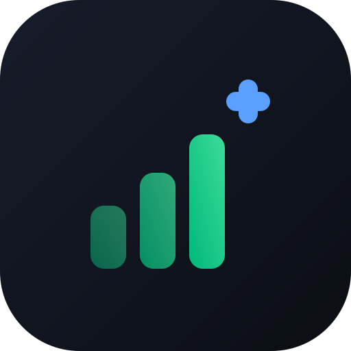

SumlyÚltima atualização: 22 de outubro de 2026
Esta política explica como o Sumly trata seus dados. Escrevemos em linguagem direta de propósito — você tem o direito de entender o que acontece com suas informações sem precisar de um advogado.
O responsável pelo tratamento dos seus dados (controlador) é [69.765.866 DAVI PACHECO FERREIRA], CNPJ [69.765.866/0001-90], com endereço em [5 de Maio, 1014, Ana Maria, Criciuma – SC, 88816-303].
Para qualquer assunto sobre seus dados, fale com appsumly@gmail.com. Este e-mail é o nosso canal de comunicação com titulares de dados e com a Autoridade Nacional de Proteção de Dados (ANPD).
| Dado | Para quê | Base legal (LGPD) |
|---|---|---|
| E-mail e senha | Criar e acessar sua conta | Execução de contrato |
| Nome | Identificar você no app e nas Casas de que participa (aparece para os membros e no histórico) | Execução de contrato |
| Telefone (opcional) | Contato do suporte, se você quiser | Consentimento |
| Foto de perfil (opcional) | Identificação visual na sua Casa | Consentimento |
| Lançamentos financeiros (despesas, receitas, investimentos, dívidas, compras) | Funcionamento do app | Execução de contrato |
| Imagens de comprovantes (opcional) | Guardar o comprovante junto da despesa | Execução de contrato |
| Histórico da Casa (quem fez o quê e quando) | Mostrar aos membros as alterações feitas na Casa | Execução de contrato |
| E-mail de quem você convida | Entregar e mostrar o convite | Legítimo interesse |
| Dados da assinatura (e-mail, plano, validade, valor e número do pagamento) | Liberar o Premium e cumprir obrigações fiscais e de consumo | Execução de contrato e obrigação legal |
| Dados técnicos de acesso (endereço IP, navegador, aparelho), registrados pelos serviços que usamos | Segurança e prevenção de abuso | Legítimo interesse |
Não pedimos dados bancários, números de cartão, CPF ou senhas de banco. Os valores que aparecem no app são os que você digita ou importa por arquivo. Atenção: comprovantes que você anexar podem conter dados como nome, banco e parte do CPF — e ficam visíveis para quem pode ver as finanças da Casa.
Não pedimos mais sexo nem data de nascimento. Se você tinha informado esses dados, eles são apagados no seu próximo acesso. Não usamos seus dados para publicidade nem para decisões automatizadas sobre você.
Usamos serviços que processam dados em nosso nome, só para o app funcionar:
O Mercado Pago processa os pagamentos e trata os dados de pagamento como responsável próprio, conforme a política de privacidade dele. Nós recebemos apenas a confirmação: e-mail, plano, valor e número do pagamento.
Também podemos compartilhar dados quando a lei ou uma ordem de autoridade competente exigir. Não vendemos, alugamos ou cedemos seus dados para fins publicitários.
Alguns desses serviços guardam ou processam dados fora do Brasil, principalmente nos Estados Unidos (Google, Vercel, GitHub e jsDelivr). Quando isso acontece, a transferência segue a LGPD e as regras da ANPD sobre transferência internacional de dados.
Ao convidar alguém para sua Casa, essa pessoa passa a ver os lançamentos daquela Casa conforme as permissões que você escolher, além do nome, da foto (se houver) e do histórico de quem participa. Você controla quem entra, o que cada um vê, e pode remover qualquer membro a qualquer momento.
Pela LGPD (Lei 13.709/2018, art. 18), você pode a qualquer momento:
Para exercer qualquer um desses direitos, escreva para appsumly@gmail.com a partir do e-mail da sua conta. Respondemos em até 15 dias, sem custo.
O Sumly guarda informações no seu navegador apenas para funcionar: manter você logado, lembrar suas preferências (como o tema) e permitir o uso offline — o que inclui uma cópia dos lançamentos das suas Casas. Ao sair da conta pelo app, essa cópia é apagada do navegador (se o app estiver aberto em outra aba, feche-a antes). Não usamos cookies de rastreamento nem de publicidade. A verificação de segurança (Google reCAPTCHA) analisa sinais do navegador para diferenciar pessoas de programas automatizados e pode usar cookies próprios para isso.
Se acontecer um incidente de segurança que possa causar risco ou dano relevante a você, avisaremos você e a ANPD, como determina a LGPD.
O Sumly não é destinado a menores de 18 anos e não coletamos intencionalmente dados de crianças e adolescentes.
Se algo relevante mudar, avisaremos dentro do app antes da alteração entrar em vigor e pediremos que você confirme a nova versão.